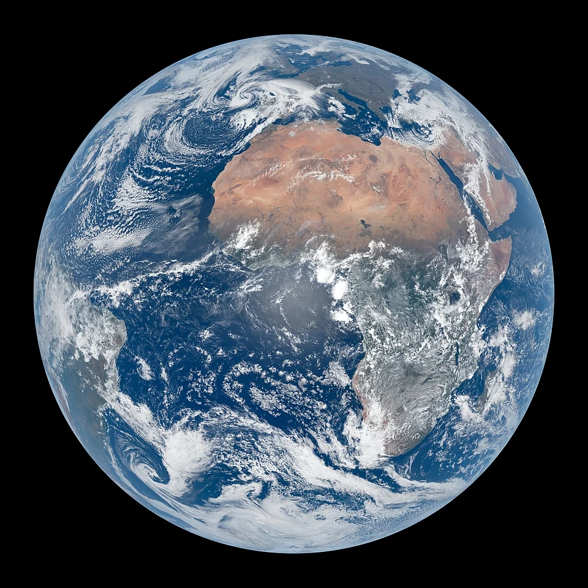

Earth is the third planet from the Sun and the only astronomical object known to harbor life. This is made possible by Earth being an ocean world, the only one in the Solar System sustaining liquid surface water.
Overview
Almost all of Earth's water is contained in its ocean, which covers 70.8% of Earth's crust. The remaining 29.2% of Earth's crust is land, which is predominantly located within Earth's land hemisphere in the form of continental landmasses. Most of Earth's land is at least somewhat humid and covered by vegetation, while large ice sheets at Earth's polar deserts retain more water than Earth's groundwater, lakes, rivers, and atmospheric water combined.
Earth's crust consists of slowly moving tectonic plates, which interact to produce mountain ranges, volcanoes, and earthquakes. Earth has a liquid outer core that generates a magnetosphere capable of deflecting most of the destructive solar winds and cosmic radiation.
See also:
- Solar System — our planetary system
- Moon — Earth's permanent natural satellite
- Biosphere — global ecological system
Atmosphere and Climate
Earth has a dynamic atmosphere, which sustains Earth's surface conditions and protects it from most meteoroids and ultraviolet light at entry. It is composed primarily of nitrogen and oxygen. Water vapor is widely present in the atmosphere, forming clouds that cover most of the planet.
Orbit and Rotation
Earth is rounded into an ellipsoid with a circumference of about 40,000 kilometres (24,900 miles). It is the densest planet in the Solar System. Of the four rocky planets, it is the largest and most massive.
Earth is about eight light-minutes (1 AU) away from the Sun and orbits it, taking a year (about 365.25 days) to complete one revolution. Earth rotates around its own axis in slightly less than a day (in about 23 hours and 56 minutes).
Etymology
The Modern English word Earth developed, via Middle English, from an Old English noun most often spelled eorðe. It has cognates in every Germanic language, from which *erþō has been reconstructed.